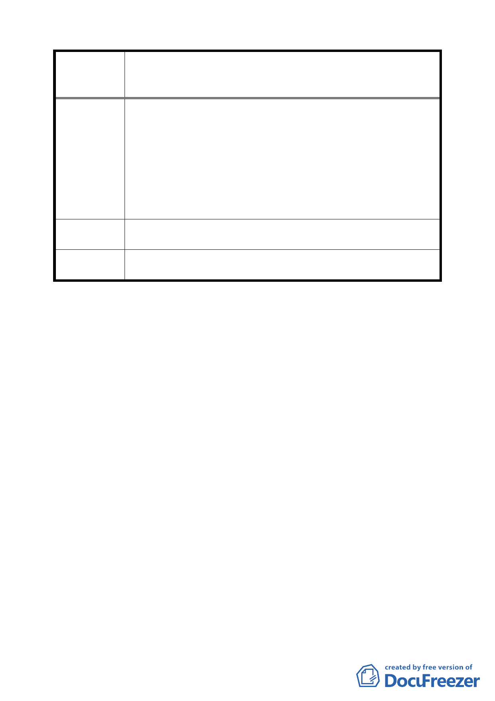

變更臺北市文山區頭廷段二小段部分 219、243 地號、頭廷段
案 名 三小段部分 257、332 地號暨政大段二小段部分 8、316 地號
等保護區土地為電力設施用地計畫案
直接影響最深之本社區居民。本社區地底下已有北二高
隧道貫穿，上有纜車通過，現又有高壓線路及高壓鐵塔
之壓迫，政府豈可一而再，再而三的將機械垃圾全堆積
在本社區？衷心期待 貴委員會主持公道，要求影響本市
都市環境至鉅之台電高壓電塔遠離都市社區至少 500 公
尺以上之設施，除可免除社區居民之疑慮避免與貓空纜
車並行且穿越 161KV 高壓電之危險外，亦可減輕都市環
境景觀之破壞。
建議辦法
堅決反對本社區後側陡峭山坡地保護區之稜線處施設台電輸
電線路。
委員會決議
經台電公司就工程技術性及安全性方面加以說明，本案照案
通過。
討論事項三
案名：變更臺北市內湖區東湖路、康樂街與汐湖橋口公園用地為
道路用地計畫案
說明：
一、本案係市府 95 年 8 月 23 日以府都規字第 09533289503 號函
送到會，並自 95 年 8 月 24 日起公開展覽 30 天。
二、法令依據：都市計畫法第 27 條第 1 項第 4 款。
三、申請單位：臺北市政府（工務局水利工程處）。
四、辦理單位：臺北市政府。
五、計畫範圍：詳計畫圖所示。
六、變更理由及內容：詳計畫書所示。
七、說明會日期：95 年 9 月 7 日。
八、公民或團體陳情意見：無。
決議：本案考量該公園用地依原徵收計畫開始使用尚未滿五年，
倘不繼續依原徵收計畫使用者，原土地所有權人得依土地
五